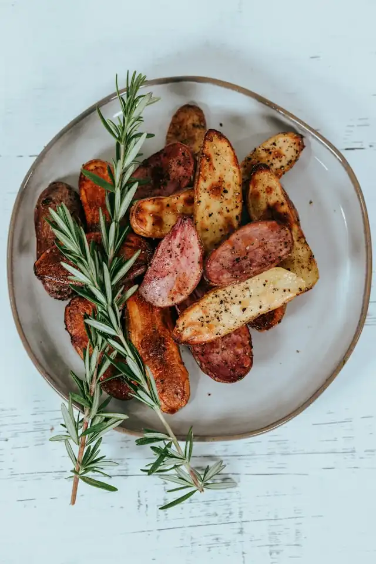

Sausage and Potatoes
I love this sausage and potatoes recipe because it's hearty, flavorful, and so easy to make in one pan. It's the kind of meal that feels comforting and filling without needing a lot of prep — just simple ingredients cooked together for a delicious result.
Ingredients
- 1 pound kielbasa sausage, sliced into 1/2-inch rounds
- 4 medium potatoes, diced
- 1 small onion, chopped
- 2 tablespoons olive oil
- 1 teaspoon garlic powder
- 1/2 teaspoon paprika
- Salt and pepper to taste
- Fresh parsley for garnish (optional)
Instructions
- Heat 1 tablespoon of olive oil in a large skillet over medium heat. Add diced potatoes and cook for 10-12 minutes, stirring occasionally, until they start to soften and turn golden.
- Add the remaining olive oil, then stir in the onion, bell pepper, and sliced kielbasa. Cook for another 10-12 minutes until the sausage is browned and the vegetables are tender.
- Sprinkle with garlic powder, paprika, salt, and pepper. Stir well to coat everything evenly.
- Top with a little chopped parsley if desired, and serve hot.